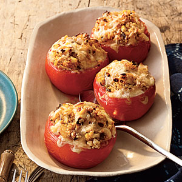

Recipes
Delicious healthy food to cook for family and friends. Not only are these fun to cook, but they also have great nutritional value.
| Food: | General Informarion: |
Roasted Carrot, Squash, and Sweet Potato Soup |
Serving Size:4 Prep Time:25 min Cook Time:45 min Calories: N/A |
Creamy Avocado and white bean wrap  |
Serving Size:1 Prep Time:25 min Cook Time: 25 min Calories: 346 |
Baked Tomatoes with Quinoa, Corn and green chiles  |
Serving Size:6 Prep Time:1hr Cook Time: 25 min Calories: 320 |
Kale with Tomato, Garlic, and Thyme |
Serving Size:4 Prep Time: N/A Cook Time: N/A Calories: N/A |
Ruby Beets Slaw |
Serving Size: N/A Prep Time:5 min Cook Time:5 min Calories: 78 |
Southwestern Salad with Black Beans |
Serving Size:6 Prep Time:1o min Cook Time:15 min Calories: 235 |
Sauteed Green Beans and Cherry Tomatoes |
Serving Size:4 Prep Time:5 mins Cook Time:15 min Calories:122 |
Mushroom Risotto |
Serving Size:6 Prep Time:10 mins Cook Time:40 min Calories: 431 |
Roasted Broccoli Grilled Cheese Sandwich |
Serving Size:4 Prep Time:5 mins Cook Time:15 min Calories:N/A |
Popcorn Balls |
Serving Size:10 Prep Time:N/A Cook Time:5 min Calories:122 |